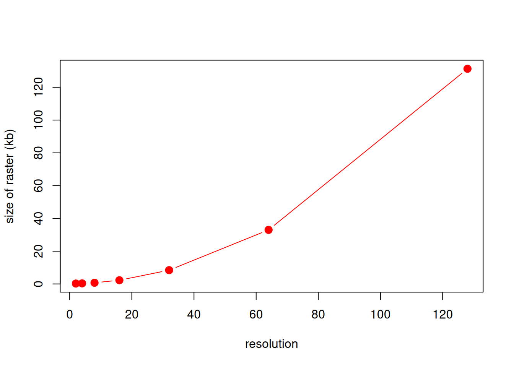
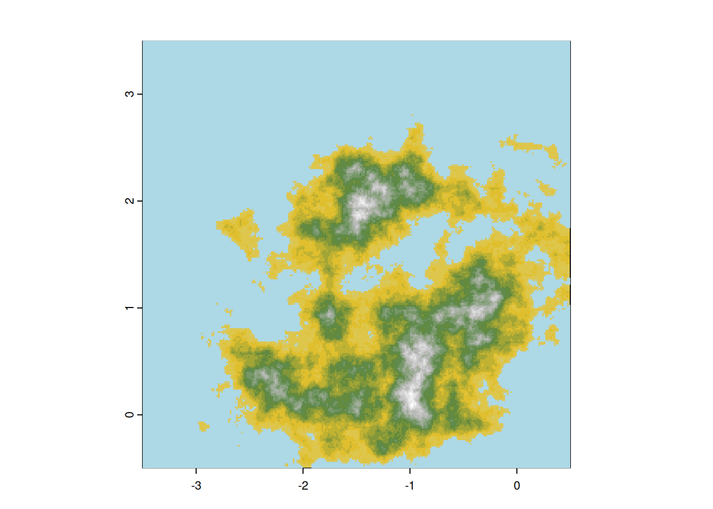
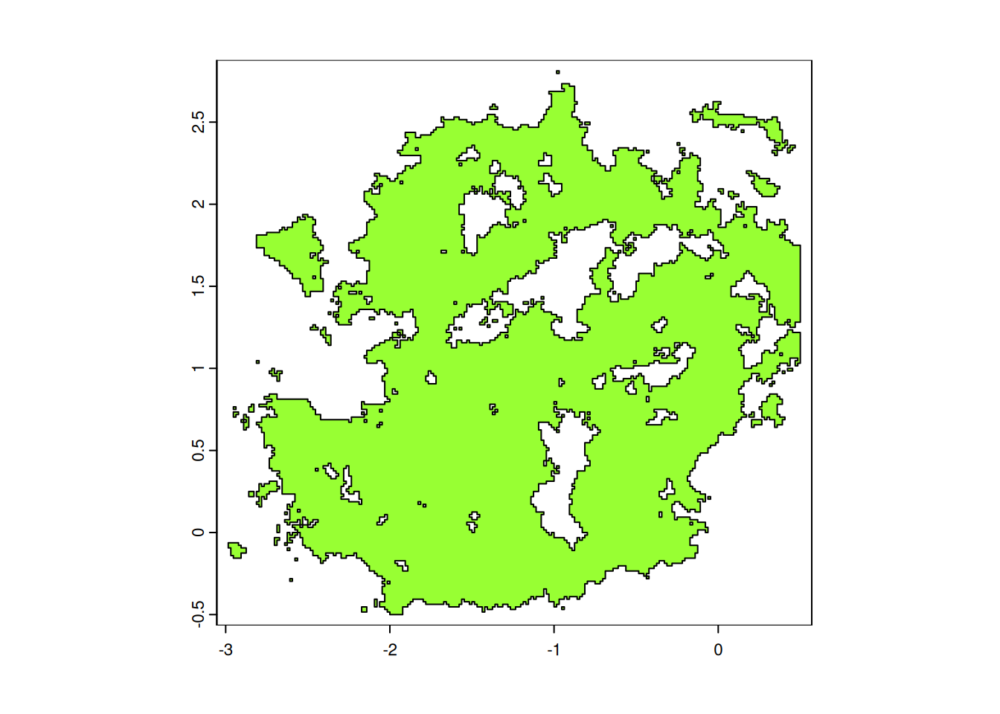
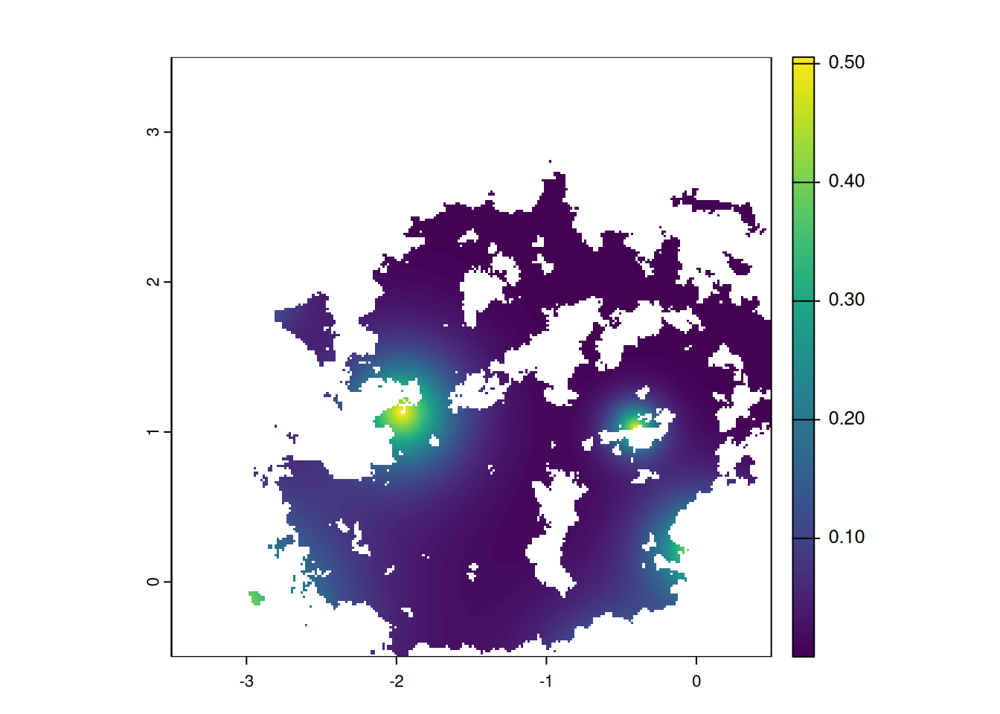

2 Landscape & Resources
To simulate the interaction between two groups, we need an environment in which they can interact in. This chapter walks you through how to generate a landscape and an environment for your simulated groups to explore. An important part of the simulation is to generate a landscape and an environment. Environmental variable are often autocorrelated. For example, The temperature at a given time is never extremly different to the temperature slightly before and slightly after this time. Same is true with the slope, or the elevation of a place,
2.2 Slope and Elevation
An important aspect of the simulation is a way to generate elevation and slope. To generate 2D autocorrelation we used a slightly methods known as perlin noise ; using the implementation found on this stackoverflow.com post.
Show code
Code
## Function 12. Perlin noise
perlin_noise <- function(
n = 5, m = 7,
N = 100, M = 100
) {
# For each point on this n*m grid, choose a unit 1 vector
vector_field <- apply(
array( rnorm( 2 * n * m ), dim = c(2,n,m) ),
2:3,
function(u) u / sqrt(sum(u^2))
)
f <- function(x, y) {
# Find the grid cell in which the point (x,y) is
i <- floor(x)
j <- floor(y)
stopifnot( i >= 1 || j >= 1 || i < n || j < m )
# The 4 vectors, from the vector field, at the vertices of the square
v1 <- vector_field[, i, j]
v2 <- vector_field[, i+1, j]
v3 <- vector_field[, i, j+1]
v4 <- vector_field[, i+1, j+1]
# Vectors from the point to the vertices
u1 <- c(x,y) - c(i, j)
u2 <- c(x,y) - c(i+1, j)
u3 <- c(x,y) - c(i, j+1)
u4 <- c(x,y) - c(i+1, j+1)
# Scalar products
a1 <- sum( v1 * u1 )
a2 <- sum( v2 * u2 )
a3 <- sum( v3 * u3 )
a4 <- sum( v4 * u4 )
# Weighted average of the scalar products
s <- function(p) 3 * p^2 - 2 * p^3
p <- s( x - i )
q <- s( y - j )
b1 <- (1-p)*a1 + p*a2
b2 <- (1-p)*a3 + p*a4
(1-q) * b1 + q * b2
}
xs <- seq(from = 1, to = n, length = N+1)[-(N+1)]
ys <- seq(from = 1, to = m, length = M+1)[-(M+1)]
return(outer( xs, ys, Vectorize(f) ))
}Various parameters for the Perlin noise will result in either a higher or lower level of definition for our future DEM raster. Our aim is to find a balance between having the environment sufficiently detailed across a relatively wide area, while also ensuring it remains manageable in terms of memory usage.
require(terra)
require(sf)
a <- 0.6
k <- 8
m <- perlin_noise(2, 2, 2^k, 2^k)
for ( i in 2:k )
m <- m + a^i * perlin_noise(2^i, 2^i, 2^k, 2^k)If we change k (that dictates the total resolution of the DEM), the size of the raster grow explonentially and would be quickly hard to manage.
allsizes <- sapply(1:8,function(k)
{
print(k)
m <- perlin_noise(2, 2, 2^k, 2^k)
for ( i in 2:k ) m <- m + 0.6^i * perlin_noise(2^i, 2^i, 2^k, 2^k)
object.size(m)
})
## [1] 1
## [1] 2
## [1] 3
## [1] 4
## [1] 5
## [1] 6
## [1] 7
## [1] 8
plot(2^(1:8),allsizes/1000,type="b",pch=20,col="red",cex=2,ylab="size of raster (kb)", xlab="resolution")
To enhance realism, slight adjustments were made to the extremes in order to create seas and mountains that more closely resemble those found in an real DEM.
height <- (m[,])*20
#height[height<50]=0
height <- height^3
height <- height+abs(mean(height))
height[height<min(height)*.25] <- min(height)*.25We can then visualise the result as a 2D raster. We setup the total extent of the raster to define exactly where it is on our GIS using a latlon projection.
We also define the mean high as the water level, all the thing below are then considered under water.
height.ras <- rast(height, extent=c(-3.5, 0.5, -0.5, 3.5), crs="+proj=latlon")
maxh <- max(height.ras[], na.rm=T)
plot(height.ras, col=col_ramp(20), legend=F, reset=F)
height.wat <- height.ras
height.wat[height.wat>mean(height.wat[])] <- NA
plot(height.wat, col="lightblue", add=T, legend=F)
This has been put in a function plotMap

The actual raster used for the original archaeoriddle is available in data_original/east_narnia4x.tif and looks like
original.ras <- rast("data_original/east_narnia4x.tif")
original.wat <- original.ras
original.wat[original.wat>mean(original.wat[])] <- NA
plotMap(original.ras,original.wat)
If you really want to feel like being in a video game, you can play with rayshader, but getting the right parameters to have a nice rendering is tricky, slow, and it’s not unlikely you’ll loose a lot of time ¯\_(ツ)_/¯
require(rayshader)
height_map <- raster_to_matrix(raster::raster(height))
hm_shade <- sphere_shade(height_map, texture = "imhof1", zscale=5)
hm_ray <- add_shadow(hm_shade, ray_shade(height_map, zscale = 19), 0.8)
hm_ambiant <- add_shadow(hm_ray, ambient_shade(height_map), 0,5)
hm_lamb <- add_shadow(hm_ambiant, lamb_shade(height_map), 0)
plot_3d(
hm_lamb,height_map, zscale = 10, fov = 0, theta = 20, zoom = .5, phi = 45,
windowsize = c(1000, 800),water = TRUE, waterdepth = 0,
wateralpha = 1, watercolor = "lightblue", waterlinecolor = "lightblue",
waterlinealpha = .7, baseshape="hex")
#HQ render, very slow
#render_highquality( samples=256, clear = TRUE,light=TRUE)2.3 Environmental resources
We will generate zones of higher resources/fitness that will attract settlements and support higher carrying capacity ie population size.
The resources will be located at given hotspots with an area around in which they decay
with a logistic function. We provide a very basic function logisticdecay which allow to define multiple source with different decay array around them.
Show code
Code
For the original archaeoriddle, these hotspots and their radius were manually selected given the topography of Rabbit Hole. These manual setups are given below:
##resource geolocalisation set manually
goodresources <- vect(
cbind(
x=c(-0.2300711, -3.1455282, -0.5086485, -1.9639755,
-0.4077843, 0.019688, -3.116710),
y=c(3.6423000, -0.2551019, -0.7440748, 1.1303214,
1.0248567, 0.2194895, 2.0267718)
)
)
#spread of resources
areas <- 4 * c(100, 2000, 200, 300, 100, 200, 400)
#speed of ressource decay:
ks <- c(0.0002, 0.0001000, 0.0001600, 0.0001800, 0.00040, .0002, 0.0002)/4
crs(goodresources) <- crs(original.ras)The function logisticdecay generates individual rasters for all the identified hotspots, which are then merged to create an aggregate raster referred to as ‘resources’.
When considering the selection of hotspots, one may choose to retain the one utilized for the archaeoriddle but to adjust these resources center to your own topography ; one can use locator() to find the coordinates of the hotspot by clicking on the map. An example of that is given in this section of the chapter
These resource span along all the map but we want to restrict them to place where peoplewill be able to settle Given this new landscape we can now generate sites in specific locations. We first need to define where the sites can appear (not in water nor too high in the mountains) ; so we first create a raster ‘viable’ which will give a binary maps where group of human can leave or not.
height.groups <- height.ras # taking back the raster created before
height.groups[height.groups<mean(height.groups[])] <- NA #replace values that are below mean level (under water)
height.groups[height.groups<(maxh*.7)] <- 1 # values below 70% of the maximum height are set as 1
height.groups[height.groups>(maxh*.7)] <- 200 # value above at 200 (high mountains)
height.groups[is.na(height.groups)] <- -1 # NA values (below waters) are set to -1
height.poly <- as.polygons(height.groups) # convert height.groups as polygons that will be of three type: -1 => under water, 1, viable, and 200, high mountaines
viable <- makeValid(height.poly[2,]) # select polygon with '1' and make it a valid polygon as it may have some loop and problemsWe now have also have a polygon viable representing the space where sites can be create.
This space is representing by the green area on the map below.

We then loop over all center manually defined previously and apply the logicitc decay within the viable raster.
allres <- lapply(
seq_along(goodresources),
function(i){
logisticdecay(goodresources[i], mask(height.ras, viable),
x=areas[i], k=ks[i]
)
}
)
## |---------|---------|---------|---------|========================================= |---------|---------|---------|---------|========================================= |---------|---------|---------|---------|========================================= |---------|---------|---------|---------|========================================= |---------|---------|---------|---------|========================================= |---------|---------|---------|---------|========================================= |---------|---------|---------|---------|=========================================
allna <- sapply(allres, function(i)any(is.na(values(i))))
allres <- allres[!allna]And when the add all the ressource raster, which gives us a final ress raster as below:
ress <- allres[[1]]
for(i in 2:length(allres))
ress <- ress + allres[[i]]
ress <- mask(ress,viable)
plot(ress)
2.4 Manually Select Resources
Below some useful code to manually select the resource origins on the map (by clicking on the screen) and explore different decays around them
plotMap(height.ras, height.wat, paste0("year ", 0))
new_site <- vect(as.data.frame(locator()), geom=c("x", "y")) # select point on the screen
crs(new_site) <- crs(height.ras)
d2 <- logisticdecay(new_site, height.ras, x=20000) # generate a logistic decay around the point
plot(d2)
w <- (0.7*d2 + 0.3*ress) / (0.7*minmax(d2)[2] + 0.3*minmax(ress)[2])
plot(w)
plot(mask(w*logisticdecay(new_site, height.ras, k=0.00002, x=1), territory))
multisamp <- sapply(
1:1000,
function(i){
spatSample(x=w, size=1, method="weights", xy=T)[1:2]
}
)